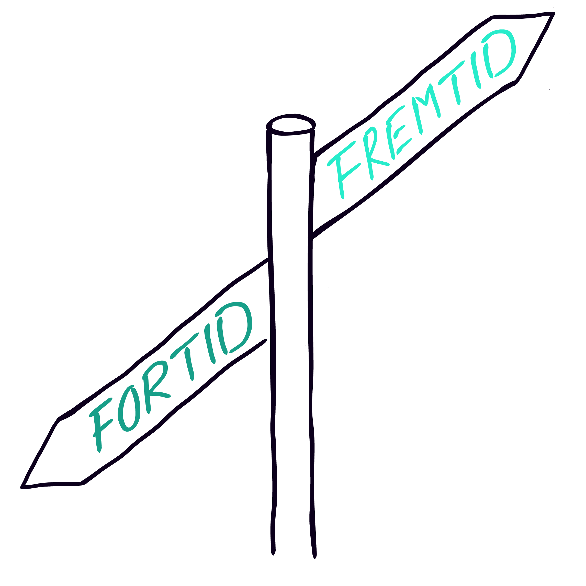

Historie

Lise-Christine Yssen

Litt om meg
IT Konsulent, Bachelor Nettverk og Sikkerhet, Fordypning i Matte, Kjemi Fyssik fra vgs.Tilgjengelige tider
Man-Tor: etter arbeidstid (16)Kontakt meg
Victoria Øverby Steinland

Litt om meg
Tidligere lærer / Master i sosiologiTilgjengelige tider
man-søn: 16.2Kontakt meg
Hanne Øverstad

Litt om meg
Lektor og statsvitenskapelig masterutdanning. Vikarlærer på Rosenhof voksenopplæring.Tilgjengelige tider
man-fre: frem til 16 (og muligens på kveldstid)Kontakt meg
Usman Ch

Litt om meg
Ta kontakt for mer informasjonTilgjengelige tider
Ta kontakt for mer informasjon.Kontakt meg
Kathrine Skansen

Litt om meg
Ta kontakt for mer informasjonTilgjengelige tider
søn-tors: 11-19 (noe unntak)Kontakt meg
Katharina Dimmen Kristoffersen

Litt om meg
LektorstudentTilgjengelige tider
man-søn: 10-18Kontakt meg
Nikita Amber Abbas

Litt om meg
Ta kontakt for mer informasjonTilgjengelige tider
man-søn: 24/7Kontakt meg
Kanwal Ali

Litt om meg
Ta kontakt for mer informasjonTilgjengelige tider
Ta kontakt for mer informasjon.Kontakt meg
Aleksander Bern

Litt om meg
Phd Stipendiat i samfunnsgeografi ved uio / foretrekker epost fremfor facebook. Akademisk skriving (referanseteknikk ol.) kultur- og samfunnsfageneTilgjengelige tider
Fleksibel: FleksibelKontakt meg
Mohammad Zain Arshad

Litt om meg
Ta kontakt for mer informasjonTilgjengelige tider
man-søn: 12-21Kontakt meg
Trine Bjørgum Gulliksen

Litt om meg
Hei! Mitt navn er Trine og jeg er ei 24 år gammel jente. Jeg er utdannet pedagog ved UiO, og jobber idag på 10. trinn på Engebråten ungdomsskole. Til høsten starter jeg på en master i spesialpedagogikk. Jeg kan hjelpe til i stort sett alle fag, utenom realfagene og andre språkfag enn engelsk. Jeg har også gått helse- og oppvekst VG1 og barne- og ungdomsarbeider VG2.Tilgjengelige tider
Mandag, Tirsdag, Onsdag, Fredag: 08-16, Torsdag: 16-21Kontakt meg
Linn Amalie Møystad

Litt om meg
Jeg har en bachelor i sosiologi og politikk fra Cambridge University i England. Jeg jobber som politisk ansvarlig i Seksualpolitisk Nettverk for Ungdom (SNU) og som miljøarbeider for utviklingshemmede.Tilgjengelige tider
man-tor: 08-21Kontakt meg
Astrid Ellida Kristiansen Bjelland

Litt om meg
Lektorstudent med hovedfag i Norsk og HistorieTilgjengelige tider
man, ons, fre, lør, søn: 09-18Kontakt meg
Johanne Prøis Fearnley

Litt om meg
Ta kontakt for mer informasjonTilgjengelige tider
tors-søn: 16:00-18:00Kontakt meg
Neelam Abbas

Litt om meg
Ta kontakt for mer informasjonTilgjengelige tider
man-fre: 17-20Kontakt meg
Live Vedeler Nilsen

Litt om meg
Historiker og journalist, master i historie, 1 år med hhv. engelsk og statsvitenskap.Tilgjengelige tider
man-søn: 16-21Kontakt meg
Thina Amalie Biørn Michelet-Rosø

Litt om meg
Bachelor i statsvitenskap, master i diakoniTilgjengelige tider
man-søn: 09-20Kontakt meg
Ane Zimmermann

Litt om meg
Student ved UiO, Statsvitenskap. Jobber som markedsmedarbeider.Tilgjengelige tider
Mandag, Onsdag, Torsdag, Fredag, Lørdag, Søndag: 08-16, Mandag, Tirsdag, Torsdag: 16-21Kontakt meg
Tiril Stokke Kleppe

Litt om meg
Ta kontakt for mer informasjonTilgjengelige tider
man-søn (må se an eget skolearbeid): 15-20Kontakt meg
Eleni Sandnes Palabiyik

Litt om meg
Ta kontakt for mer informasjonTilgjengelige tider
Man-fredag: 10 - 18Kontakt meg
Oscar Farseth Berg

Litt om meg
Studerer rettsvitenskap ved UiOTilgjengelige tider
Man-fre: 08-20Kontakt meg
Ane Zimmermann Børresen

Litt om meg
Studerer statsvitenskap ved UiOTilgjengelige tider
Mandag, tirsdag, torsdag: FleksibelKontakt meg
Sumeyye Karakoc

Litt om meg
lektorstudent i norsk og historieTilgjengelige tider
man-fre: 10-16Kontakt meg
Vlera Kelmendi

Litt om meg
Ta kontakt for mer informasjonTilgjengelige tider
ons-søn: 16-23Kontakt meg
Jane-Victorius Bonsaksen

Litt om meg
Ta kontakt for mer informasjonTilgjengelige tider
søn-fre: FleksibelKontakt meg
Pernille Bucher-Johannessen

Litt om meg
Ta kontakt for mer informasjonTilgjengelige tider
man-søn: 16-21Kontakt meg
Iqra Usmani

Litt om meg
Ta kontakt for mer informasjonTilgjengelige tider
Ta kontakt for mer informasjon.Kontakt meg
Shirley Cheng

Litt om meg
Ta kontakt for mer informasjonTilgjengelige tider
mandag-søndag: før klokken 15.00Kontakt meg
Donika Kukleci

Litt om meg
Ta kontakt for mer informasjonTilgjengelige tider
tirs-søn: 16-20Kontakt meg
Ine Bakke Allum

Litt om meg
Bachelor i Spesialpedagogikk, jobbet to år i OsloskolenTilgjengelige tider
man-fre: 10-16Kontakt meg
Axel Ravn Kleiven

Litt om meg
Ta kontakt for mer informasjonTilgjengelige tider
man-søn (må se an eget skolearbeid): 15-20Kontakt meg
Yasmin Gamze Yapici

Litt om meg
Lektorstudent på UiO med fagene norsk, historie og religionTilgjengelige tider
man-søn: 10-16Kontakt meg
Atusa Salehi

Litt om meg
Ta kontakt for mer informasjonTilgjengelige tider
Ta kontakt for mer informasjon.Kontakt meg
Mats Holbø Frydenberg

Litt om meg
Master i psykologi (NTNU) og bachelor i idrettsvitenskap (Norges Idrettshøgskole)Tilgjengelige tider
Tirsdag, onsdag, fredag: 10-16Kontakt meg
Johannes Stokkenes

Litt om meg
Ta kontakt for mer informasjonTilgjengelige tider
man-fre: 10-16Kontakt meg
Sahar Omer

Litt om meg
Ta kontakt for mer informasjonTilgjengelige tider
Ta kontakt for mer informasjon.Kontakt meg
Fagoversikt